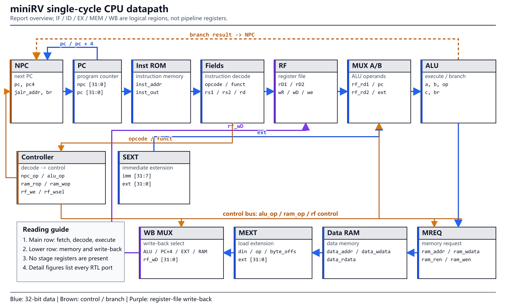
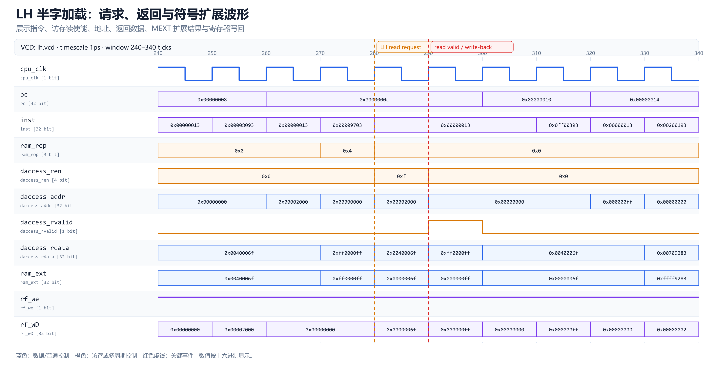
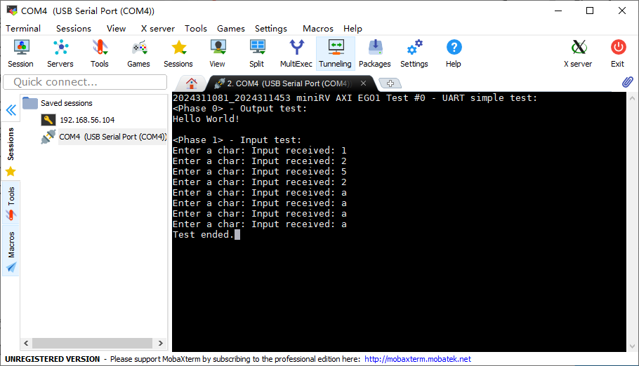
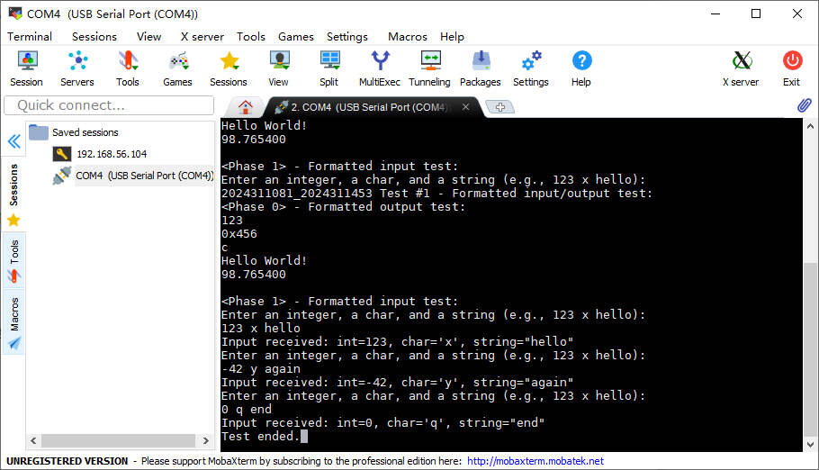
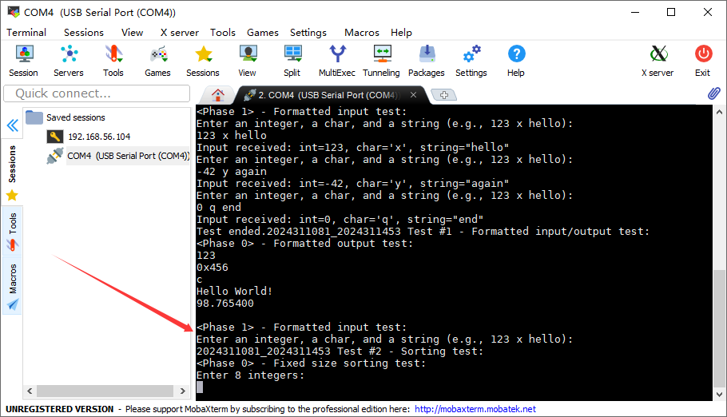
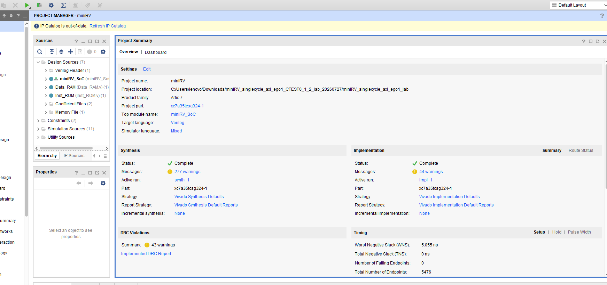
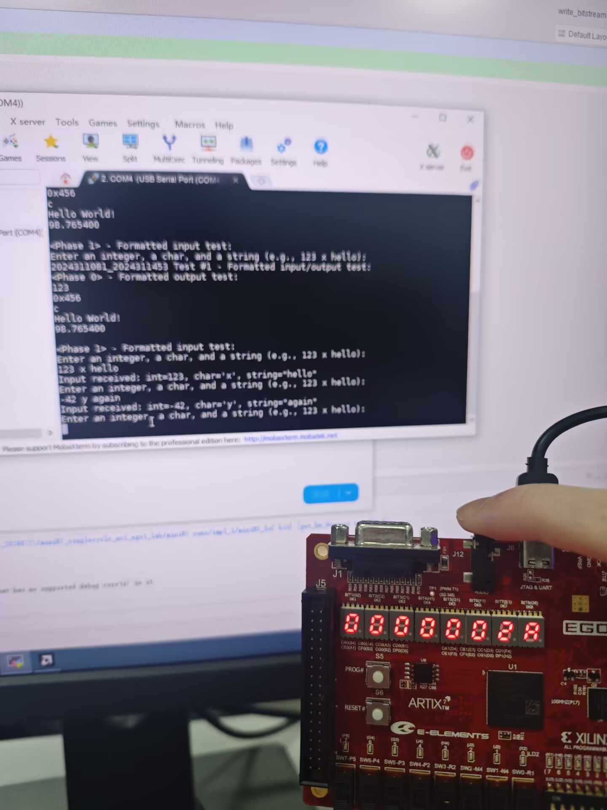
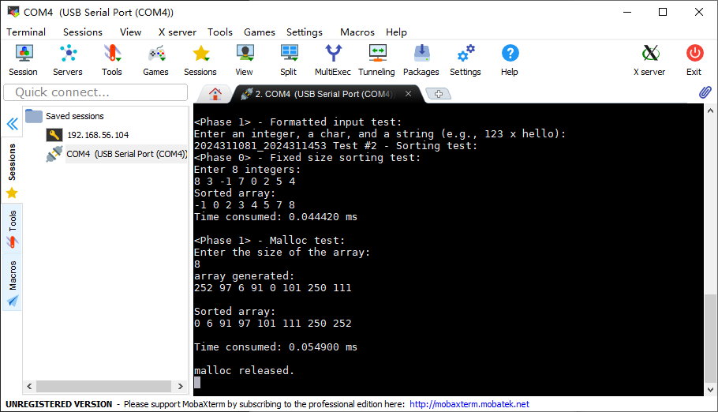

Computer Design Acceptance Console
miniRV 五项验收：从 RTL 到 EGO1 实板
用数据通路、关键代码、定向波形、三组 Trace 日志和实板结果解释我们完成了什么，以及每一层证据究竟证明什么。
单周期 AXI Trace · 45/45
流水线 Basic Trace · 45/45
流水线 AXI Trace · 45/45
C_TEST0～2 · BOARD PASS
CoreMark · VALIDATED
验收顺序与证据边界
3 × 45/45
单周期 AXI、流水线 Basic、流水线 AXI 的真实课程 Trace。
C_TEST 0–2
单周期 SoC 的 UART、格式化 I/O、排序、动态内存和板级 MMIO。
21.250 CoreMark
50 MHz 实板，700 次迭代，运行 32 秒，CRC 正确。
| 层次 | 先展示 | 再解释 | 最后给结论 |
|---|---|---|---|
| RTL 结构 | 数据通路图 | 模块边界和关键控制 | 设计为何能工作 |
| 功能验证 | 波形 / Trace 日志 | 周期级事件和提交语义 | 45/45、0 failed |
| 物理系统 | Vivado / 实板照片 | 时序、UART、MMIO、长时间运行 | 板级 PASS |
边界必须主动说明Trace 不等于上板；照片不替代可重建工程；当前无 Cache。AXI 图是直接总线事务，不是 Cache miss。
1 / 两条数据通路


现场讲：CPU 核心只暴露 ifetch/daccess 请求响应接口，AXI 五通道由 cpu_top 和 axi_master 负责。流水线版增加四组流水寄存器、前递、load-use 暂停、分支冲刷以及长延迟操作冻结；这个解耦让 Basic 与 AXI 可以分层验收。
2 / 单周期 AXI Trace
现场命令
先按 单周期 AXI README 的 AXI Trace 三步准备 RTL，再执行：
cd ~/cdp-tests
make clean
make
python3 run_all_tests.py通过判据：Passed Tests (45)，Failed Tests (0)
状态机



现场讲：读地址和读数据分两阶段；写地址和写数据可以不同拍握手；等待期间 VALID、地址和数据必须保持稳定。CPU 侧只在事务真正完成时看到一次响应。完整 RV32IM 经这条路径通过 45/45。
3 / 流水线 Basic Trace
现场命令
bash miniRV_pipeline/prepare_trace.sh ~/cdp-tests
cd ~/cdp-tests
make clean
make
python3 run_all_tests.py通过判据：Basic Trace 45/45，0 failed
load-use 只插入必要的一拍

前递
普通 ALU 相关从 EX/MEM 或 MEM/WB 直接送回 EX，避免无意义停顿。
暂停
load-use、访存等待和多周期乘除法分别产生精确的 stall/freeze。
冲刷
分支、JAL、JALR 在 EX 重定向；年轻错误路径 valid 被清除，不会提交。
现场讲：最重要的是 valid 和提交级。停顿不是简单冻结所有信号：load-use 要保留前端并向 EX 插空泡；真正的外部等待才冻结活动流水级。Trace 来自 MEM/WB，确保冲刷指令不会被算作退休。
4 / 流水线 AXI Trace
现场命令
bash miniRV_pipeline_axi/prepare_trace.sh ~/cdp-tests
cd ~/cdp-tests
make clean
make
python3 run_all_tests.py
# 定向 RTL 回归
bash miniRV_pipeline_axi/tests/run_iverilog.sh通过判据：AXI Trace 45/45，0 failed
AXI 延迟带来的三个约束
- 等待必须冻结：
memory_freeze阻止未完成访存越过 MEM。 - 响应只提交一次：store 的
debug_mem_we只在写响应完成时脉冲。 - 过期取指必须丢弃：分支后旧 PC 的在途 AXI 返回不能进入流水线。
41/45 到 45/45 的核心修复响应拍内屏蔽尚未撤销的旧请求，避免同一 store 被再次接受；同时让 Trace 写事件与 AXI 写响应一一对应。
与 Basic 的区别
load-use 是内部数据尚未产生；AXI wait 是外部事务尚未完成。前者插入局部空泡，后者必须保持在途指令和请求状态，直到握手完成。
5 / 单周期 C_TEST0～2
共用构建口径每换一个程序都要重新生成 bitstream。串口 115200 8N1、无流控；按 S6 RST，不按 S5 PROG#；Timing 必须 WNS ≥ 0、TNS = 0、0 failing endpoints。






现场讲：这三项不是三个孤立 C 程序，而是逐步扩大系统覆盖：C_TEST0 验证 UART 双向和基础 MMIO；C_TEST1 验证格式化库、符号数和外设显示；C_TEST2 验证排序、计时器、较复杂控制流和动态内存。
6 / 流水线 CoreMark
有效实板结果
| 频率 | 50 MHz |
|---|---|
| 运行 | 32 s / 700 iterations |
| CoreMark | 21.250 |
| CoreMark/MHz | 0.425 |
| 校验 | Correct operation validated |
| 板卡结束码 | C0DE600D |
代码入口


现场讲：分数不是唯一重点。CoreMark 连续运行 32 秒、完成 700 次迭代，四组 CRC 正确并输出 validated，证明控制流、访存、M 扩展长延迟、计时器和 UART 在持续负载下共同正确。
仍需补回的原始文件流水线/CoreMark 最终 bitstream、ltx、Timing Summary、Utilization 和 Power 原始报告目前不在仓库；现有截图和照片足以说明已跑通，但现场最好把实验室原始文件一并带上。
7 / 老师追问与标准回答
单周期 C_TEST0～2 和流水线 CoreMark 的区别？
前者验证单周期 SoC 与板级外设联调；后者还要求五级流水、冒险处理、M 扩展长延迟和 AXI 等待在持续负载下同时正确。课程评分表中，单周期 C_TEST0～2 对应“良好”的板级目标，流水线 AXI + CoreMark 对应“优秀”目标。
为什么 Basic Trace、AXI Trace、上板三个都要？
Basic 隔离 CPU/流水线；AXI 加入可变延迟和握手；上板再验证 Vivado 时序、时钟复位、BRAM、UART 与真实引脚。三层定位不同，不能互相替代。
流水线 AXI 最关键的 bug 是什么？
AXI 响应出现时 Master 已可回到 IDLE，但核心到下一拍才撤销旧请求，旧 store 可能被重复接受；分支时还可能收到旧 PC 的在途取指。修复是响应拍屏蔽旧请求、写提交只脉冲一次、过滤过期取指。
为什么没有 Cache？
本次实现目标是无 Cache AXI SoC。CPU 请求接口与 AXI Master 已解耦，为后续插入 ICache/DCache 留出边界，但当前不声称已经实现 Cache。
CoreMark 分数为什么不高？
当前是单发射五级流水，访存走单事务 AXI/BRAM，M 扩展是多周期单元，也没有 Cache。当前先证明正确性；主频、Cache、AXI 吞吐和乘除法结构是后续性能优化方向。
流水线 A/B 组怎么分工讲？
A 组讲理想 IF/ID/EX/MEM/WB 划分、级间 valid 和前递、load-use、store 数据、flush、freeze、M busy；B 组从 ifetch/daccess 接口接手，讲 I/D 侧接口、AXI 五通道和 BRAM/MMIO 外设。当前没有真正 ICache/DCache，必须表述为“保留 I/D 侧接口、无 Cache 直连 AXI”。
8 / 现场检查清单
电脑与工程
- 本页可离线打开，图片点击后能看清信号和文字；
- 三份日志能搜索到
Passed Tests (45)； - Vivado 工程与源码、bitstream 匹配；
- C_TEST0、1、2、CoreMark 的 bitstream 分开命名；
- 补回流水线/CoreMark 的 bit/ltx/rpt 原始文件。
板卡与演示
- 串口 115200 8N1、无流控；
- 准备 USB 串口线、JTAG 线、电源和 EGO1；
- 按 S6 RST，不按 S5 PROG#；
- 先说“证明什么”，再操作，最后读出通过判据；
- 两人均能解释 stall、flush 和 AXI VALID/READY。
最后一句三类 Trace 均 45/45，单周期 C_TEST0～2 实板通过，流水线 CoreMark 运行 32 秒且 CRC 校验正确；结构、代码、波形、日志与实板证据能够逐项对应。